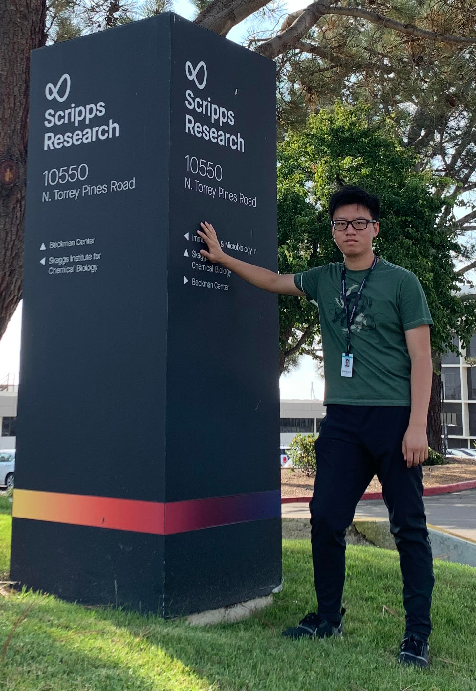
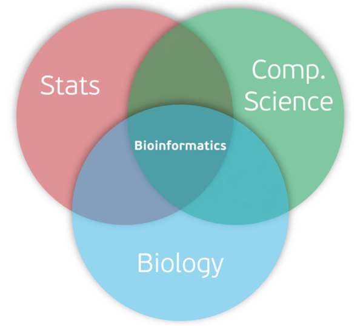

About
This website is a brief introduction to the field of bioinformatics, specifically made for those who are in or planning to go into a typical, non-computational biology major.
I am Zhaoyang Jia, the author of this webpage. I am an undergraduate student at UC San Diego, pursuing a double major between Molecular and Cell Biology, and Mathematics-Computer Science. I have a strong interest in both the wet-lab focused molecular biology and the computationally heavy bioinformatics. I have work experience in both types of labs, and have met groups of highly talented individuals from both disciplines. My goal for making this website is to advocate bioinformatics, a newly arisen field with great future potential. I hope the readers, who have the necessary biology background, when deciding their future careers or advising their friends, can acknowledge bioinformatics as a lucrative option.
Background of Bioinformatics

Bioinformatics is also called computational biology, and it is the intersection of biology, statistics, and computer science. Computer scientists cannot work directly on biological data because vast biology background knowledge is needed to extract any meaningful information. Similarly, for us who come from the biology background, we need to gain the necessary baseline knowledge in computer science in order to take on the tasks of bioinformatics. Fortunately, typical bioinformatics careers are mostly biology-oriented rather than computer-science-oriented, so there is siginficantly less to pick up about computer science relative to the knowledge we already have in biology. In later pages, I will guide us through the potential career choices and where to start off on learning programing.
The field of bioinformatics emerged about twenty years ago, as a product of the Human Genome Project. Ever since, the field has been continuously accelerating, supported by the significant decrease in sequencing cost and computing power. Beknown to most, the information era was fueled by the decrease in computing power, which is outlined by the Moore's law: such that since 2007, the cost of transistors have decreased about 100-fold. However, in comparison, there is an even more extremely decrease in the cost of generating biology data. For example, the DNA sequencing cost has decreased by 10,000-fold since 2007. Coupling with the already cheap computing power, the field of bioinformatics boomed. (NIH 2021).
With the much more available data and computing power, data can be generated and analyzed at rates that are unimaginable even compared to ten years ago. A typical 3 minute, high-fidelity song can be as big as 0.01 GB, whereas a genome data file is typically 150GB in size. Moreover, we generate hundreds of genomes data files at a time using the automated machinery that were invented in the last decade. These ultra-large data files cannot be manually analyzed, and automatic pipelines need to be built to critically extract useful information from them. Since the generation of these data from wet lab is cheap and easy, many labs have adopted modern instruments to generate huge outflux of data. The volume of data has determined that even on powerful server clusters, the analysis would take days. Therefore, it is utmost important to develop techniques to efficiently and effectively analyze biological data.
The current bottleneck in biological research has shifted from data generation to data analysis; thus, there is a great vacancy for bioinformaticians, and this gap is likely to widen as the data generation further develops.